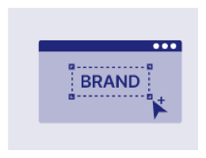
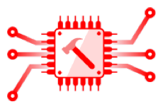
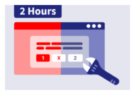
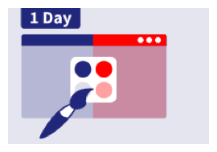
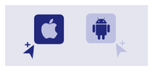

INTEGRATION FLOW
Initial setup, adapter and ID mapping, channel creation, and integration





1 · CLIENT · INITIAL SETUP · 1 HOUR
2 · CLIENT · INITIAL SETUP · 1 HOUR
Client is granted access to the Virtual Stadium dashboard.
3 · SPORTRADAR · INITIAL SETUP · 1 DAY
Setup of brands and operators.
4 · SPORTRADAR · INITIAL SETUP
Invitations are sent to supervisors and moderators.
5 · SPORTRADAR · ADAPTER & ID MAPPING · 5–15 DAYS
Sportradar prepares a data adapter that enables communication between Virtual Stadium and the client’s API or front end.
This step is required to enable Bets Sharing and Flash Bet.
6 · CLIENT · ADAPTER & ID MAPPING · 1–5 DAYS
7 · SPORTRADAR · CHANNEL CREATION · 3–10 DAYS
API endpoint for channel creation is prepared by Sportradar.
8 · CLIENT · CHANNEL CREATION
Channel creation request is sent to the API by the client.
9 · CLIENT · WEB · 2 HOURS
Virtual Stadium widget can be integrated on the webpage as an inline or a pop-up element.
10 · CLIENT · WEB · 1 DAY
Styling options include colors and typography.
11 · SPORTRADAR · MOBILE UI COMPONENTS · 1–3 WEEKS
12 · CLIENT · MOBILE UI COMPONENTS
Client can use the Android or iOS Virtual Stadium SDK to integrate Virtual Stadium components into their native app.
13 · CLIENT · MOBILE DATA SDK · 3+ MONTHS